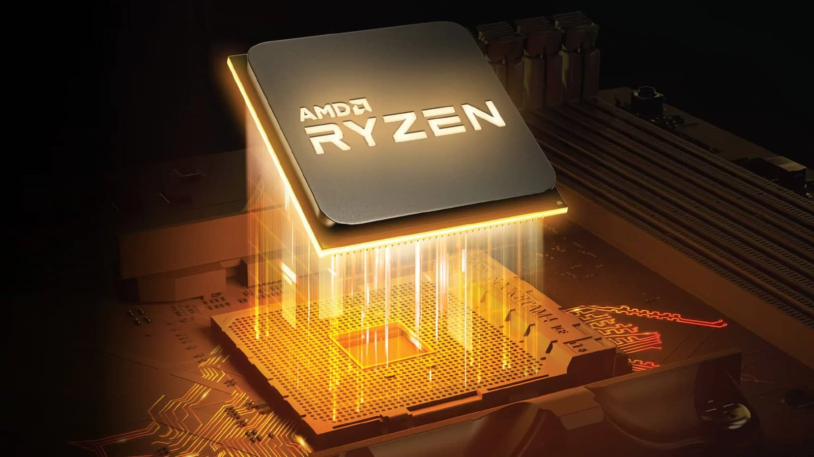
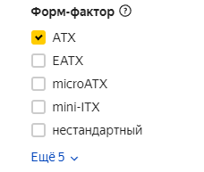
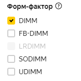
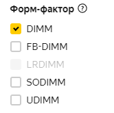

Чтобы правильно собрать ПК, для начала нам необходимо прежде всего понять для чего он нам нужен. Отправная точка сборки для любого ПК – это выбор ЦП, от мощности этого камня зависит параметр «на долгие годы», мы же не хотим покупать новый ПК уже через 3 года или пыхтеть, почему все таак долго грузится, неправильно определившись с выбором процессора.
Сначала хочу пояснить, с чего вообще вдруг ситуация, что нам нужно будет собирать новый ПК, ошибившись с необходимой нам мощностью процессора.
Сокет:
На самом деле ответ довольно прост. Так получается, что в будущем заменить процессор можно, но более проблематично, чем другие комплектующие. Почему? Потому что у процессора есть его форма - «ноги» или же «тычинка», а у материнской платы есть «пестик», то, что эти самые «ноги» у процессора принимает. В общем называйте, как хотите, это чтобы было проще понимать, но на самом деле называется это «Сокет».
Из информации выше, можно было понять, что Сокет есть как у процессора, так и у материнской платы и выглядит он вот так

Проблема в том, что, когда в будущем нам понадобится более мощный процессор, вы не сможете купить подходящий нам по Сокету, потому что он уже будет устаревший и процессоров с ним уже просто не будет в продаже.
Вывод из этого всего: не экономьте на выборе процессора!
Вложитесь в него, вы потом с легкостью замените другие комплектующие, но не процессор и вам придется пересобрать ПК заново с новым ЦП.
Ценность процессора должна составить:
- Примерно 50% стоимости ПК при сборке с видеокартой
- Примерно 70%, если собираете без видеокарты
Итак, перейдем к самому выбору процессора. На данный момент существует 2 фронта процессоров:
- Intel
- AMD
В их различиях работы с определёнными задачами есть тонкости, но в целом, вас это особо волновать не будет. Для пользователя важно лишь сколько денег ему придется выложить из своего кошелька на покупку бюджетного рабочего или крутого игрового ПК.
Поэтому, как бы для вас более надежной, привычной, знакомой, «ну все всегда вроде используют» и на слуху не была Intel и эта картинка:

с 2020 года все, кто шарит, уже давно выбирают эту:
и довольно скоро обгонит полностью процент использования процессоров Intel в компьютерах. По цене и тому, что вы хотите получить от ПК, надо выбрать именно процессор AMD Ryzen.
Для того, чтобы правильно выбрать процессор надо разобраться в довольно просто и удобной маркировке (почти одинаковой для Intel и AMD):
Для процессоров Intel:
Линейка Intel Core делится на такие классы:
- Core i3 — начальный уровень, подходящий для несложных задач;
- Core i5 — включает в себя универсальные модели из среднего сегмента;
- Core i7 — мощные процессоры, в том числе для гейминга;
- Core i9 — премиальная продукция, которая, помимо гейминга, ориентирована на ресурсоемкие рабочие приложения;
- Core X — исключительно узкоспециализированные профессиональные задачи.
После классификации процессор в названии имеет числовое обозначение. Первая цифра всегда означает поколение. На данный момент самым актуальным является 10-е. У каждого поколения имеется кодовое название. Например:
- Core i7-7700 — 7-е поколение Kaby Lake.
- Core i7-8700 — 8-е поколение Coffee Lake.
- Core i9-10900 — 10-е поколение Ice Lake.
Как вы заметили, после поколения следуют ещё три цифры. Как правило, они отображают уровень производительности модели относительно других процессоров в одном поколении. Например:
- Intel Core i5-7400 — самый слабый среди всех i5 седьмого поколения.
- Intel Core i5-7500 — средний по производительности.
- Intel Core i5-7600K — самый мощный.
В наименовании модели после цифр может быть расположена буква, которая указывает на отличительную характеристику процессора. Они могут комбинироваться различными способами. В этой статье я обращу внимание только на маркировку K (Например, Intel Core i9-9900k), что означает, что на высокотехнологичном заводе производитель разблокировал возможность самостоятельного пользовательского разгона ЦП.
Для процессоров AMD:
Линейка AMD Ryzen делится на такие классы:
- Ryzen 3 — слабые процессоры, которые подойдут для офиса.
- Ryzen 5 — хорошо впишутся в домашнюю мультимедийную сборку.
- Ryzen 7 — производительные премиальные продукты для гейминга или серьезных задач.
- Ryzen 9 — девайсы с небольшим запасом производительности на ближайшие несколько лет.
- Ryzen Threadripper — модели, которые избыточны для домашнего пользования и нужны для работы с требовательными приложениями.
Поскольку линейка Ryzen относительно молодая, она насчитывает не так много поколений, как у Intel. Определяется оно традиционно по первой цифре в наименовании. Также разработчик присваивает каждому поколению кодовое имя.
- Ryzen 5 1600 — первое (Zen).
- Ryzen 5 2600 — второе (Zen+).
- Ryzen 5 3600 — третье (Zen2).
Последние три цифры схожим образом отображают производительность процессора в рамках одного класса и поколения. Чем цифры больше — тем ЦПУ мощнее.
- Ryzen 5 1400 — самый слабый среди Ryzen 5 первого поколения.
- Ryzen 5 1500X — обладает средней производительностью.
- Ryzen 5 1600 — самый мощный.
У AMD некоторые буквы по значению отличаются от аналогичных у Intel. В данной статье обращу внимание только на буквенные-маркировки G и X:
- G — процессоры с встроенным видеоядром. По умолчанию у AMD практически все модели линейки Ryzen лишены интегрированной графики.
- X — мощные ЦПУ, разогнанные производителем.
Если вы собираете игровой ПК, конечно, лучше открыть YouTube и посмотреть сравнение показателя FPS – частоты кадров в определенных играх на ряду с видеокартой, которую вы в давнейшем захотите выбрать. Помните, что необходимо, чтобы показатель FPS был не ниже герцовки “Hz” вашего монитора (показатель максимальной частоты кадров, который ваш монитор может показывать, в большинстве случаев – 60Hz)
Некоторая информация про ЦП была взята с этих отличных статей:
Если вы хотите подробней разобраться в разнице между Intel и AMD
(сокетах, какие являются устаревшими/новыми, про ядра/потоки и других тонкостях)

Форм-фактор:
Во-первых, начав выбирать материнскую плату, мы должны определиться с размером нашего ПК, он еще называется форм-фактором. Они разные и их много, но здесь приведу я основные 4, а именно:
- Mini-ITX
- Micro-ATX
- ATX
- XL-ATX

В данной статье я буду опираться именно на ATX, да и все привыкли именно к такому размеру десктопного ПК, поэтому в фильтрах материнских плат мы должны выбрать ATX
Сокет:
Далее, в зависимости от ранее выбранного нами процессора мы должны выбрать Сокет, о котором мы говорили ранее в разделе процессоров

Чипсет:
А теперь прошу внимания, фактически самое важное при выборе материнской платы – чипсет. Чипсет определят то, что может ваша материнская плата. Различия в букве (H, B, Z, X, Q, W) и в числе. Их много и их всех пихать в эту статью я не буду.
Для того, чтобы очень ускорить выбор чипсета, в фильтрах интернет-магазина выберите сокет и форм-фактор, как было сказано выше и посмотрите, с какими чипсетами материнские платы остались в магазине.
Например, при выборе сокета AM4 и форм-фактора ATX, в предложении мне остались только чипсеты: B350, B450, B550, X570, как на картинке ниже. Найти оставшиеся и разобраться в их отличиях вам и нужно, что не займет более 5 минут.

Для того, чтобы корректно выбрать чипсет хочу обратить внимание на следующие 2 великолепные статьи (смотрите только нужные вам чипсеты, все объяснено кратко, вы быстро все поймете):
Тип памяти необходимо выбрать DDR4 DIMM, о ней мы поговорим чуть позже.
Разъемы и наличие встроенных Wi-Fi и Bluetooth в материнской плате вы можете выбрать самостоятельно на свое усмотрение. Но даже если вы купите плату без Wi-Fi или Bluetooth, не пугайтесь, вы всегда сможете докупить их в качестве USB устройств и вставить их в плату.
Также не забывайте смотреть на производителей платы (GIGABYTE, ASUS, MSI и так далее). Посмотрите отзывы конкретной платы в интернет-магазине или на YouTube от конкретного производителя.

Объем RAM
Но для начала нужно понять сколько вообще Гигабайт RAM нам необходимо. Могу честно сказать сразу и без чего-либо лишнего: 8 Гб RAM – уже не хватит никому, чем бы вы не занимались на своем ПК. Самое приемлемое количество это 16 Гб – абсолютная необходимость 95% пользователей.
Но если вы работаете в Photoshop’е с фотографиями в высоких разрешениях или в видеоредакторе с видео качеством в 4K/60 fps, то сразу закладывайте себе уже 32 Гб, чтобы ПК постоянно не обращался за помощью к жесткому диску и не шел по постоянным тормозам. Но вы можете купить 16 Гб, которых скорей всего будет достаточно, а при необходимости вы сможете докупить ещё планки оперативной памяти и вставить их в свободные слоты памяти на материнской плате.
Теперь давайте определимся с другими характеристиками Оперативной памяти. В данной статье я решил пойти от обратного, то есть мы уже выбрали материнскую плату и от нее будем выбирать RAM. Чтобы сделать все правильно нужно просто внимательно посмотреть, чтобы не было противоречий с некоторыми характеристиками материнской платы, а именно:
- Количество слотов памяти
- Тип памяти
- Максимальная частота памяти
- Максимальный объем памяти
- Режим работы оперативной памяти
Количество слотов (модулей) памяти
Посмотрите сколько планок оперативной памяти вы можете вставить в вашу материнскую плату. Если всего одну, то выбирайте 1 планку (хотя это большая редкость), если 2 и более слотов (обычно их 4), то покупайте 2 планки по 8 Гб (16Гб = 8x2) - это немного ускорит работу вашего будущего ПК. (если материнская плата имеет “двухканальный” «режим работы оперативной памяти», что вы тоже можете посмотреть в характеристиках платы)

Тип выбираем DDR4 или DDR5 и Форм-фактор выбираем DIMM, как и в «Типе памяти» у материнской платы, которую выбрали, углубляться в это не будем.
 

Тактовая частота
По поводу Тактовой частоты, которая измеряется в Мгц. Старайтесь выбрать как можно большую скорость за приемлемую цену на рынке (золотую середину) и чтобы она была не выше «Максимальной часоты памяти» у материнской платы. Советую найти RAM с тактовой частотой не ниже 3200 Мгц.
Более подробно про оперативную память. Ответы почти на все вопросы и сомнения, которые могут возникнуть при выборе.